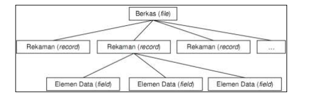

Pengertian secara kharfiah, basis data terdiri dari dua kata yaitu basis dan data. Basis dapat diartikan sebagai suatu markas atau gudang, tempat bersarang atau tempat berkumpul. Data dapat diartikan merupakan representasi dari fakta dunia yang mewakili suatu obyek (manusia, barang, peristiwa, keadaan dsb) yang direkam dalam bentuk angka, huruf, simbol, teks, gambar, bunyi atau kombinasinya. Adapun menurut pengertian secara istilah, terdapat beberapa definisi yaitu sebagai berikut :
Basis data adalah merupakan suatu sistem yang dibangun oleh beberapa komponen diantaranya ada enam komponen pokok antara lain ialah :
Beberapa tujuan penggunaan basis data adalah sebagai berikut :
DBMS adalah program aplikasi yang dibuat dan bekerja dalam satu system. DBMS didesain untuk membantu dalam hal pemeliharaan dan utilitas kumpulan data dalam jumlah besar. DBMS dapat menjadi alternatif penggunaan secara khusus untuk aplikasi, misalnya penyimpanan data dalam field dan menulis kode aplikasi yang spesifik untuk pengaturannya.
Kumpulan file (table) yang saling berhubungan dalam di sebuah komputer dan sekumpulan program yang memungkinkan beberapa pemakai dan atau program lain untuk mengakses dan memanipulasi file-file atau tabel-tabel tersebut.
Beberapa software atau perangkat lunak DBMS yang sering digunakan aplikasi program antara lain :
Table merupakan himpunan data yang diorganisasikan ke dalam baris (record) dan kolom (field).
Masing-masing kolom memiliki nama yang spesifik dan unik.
Field merupakan kumpulan data dari sebuah table. Field memiliki ukuran type data tertentu yang menentukan bagaimana data nantinya tersimpan.
Record merupakan kumpulan data yang terdiri dari satu atau lebih suatu field. Pada setiap baris atau record ini tersimpan data-data dari subyek tabel yang bersangkutan .
Di samping itu data-data yang ada dalam satu record dari bermacam-macam tipe data.
Key merupakan suatu field yang dapat dijadikan kunci dalam operasi tabel. Dalam konsep database, key memiliki banyak jenis diantaranya Primary Key, Foreign Key, Composite Key, dll.
Gambar dibawah ini menjelaskan contoh penempatan data mahasiswa dalam tabel MHS
Arsitektur/struktur basis data merupakan serangkaian pengetahuan tentang pemodelan data. Melalui deskripsi struktur basis data dapat ditentukan jenis data, hubungan dan keterbatasan data yang ditangani.
Dalam basis data, data diorganisasikan kedalam bentuk elemen data (field), rekaman (record), dan berkas (file). Definisi dari ketiganya adalah sebagai berikut:
Struktur hirarki sebuah database dapat digambarkan dalam diagram hirarki sebagai berikut :
